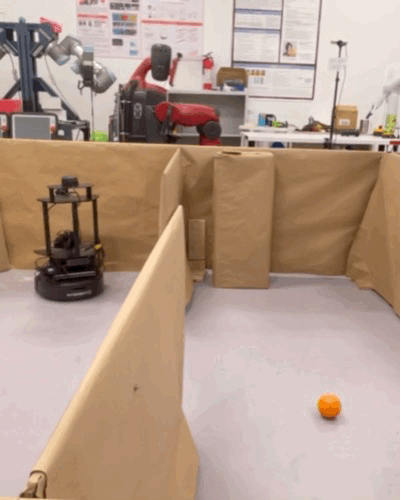

SpheroHunter
Tracking down Sphero with occlusions
We designed an algorithm that lets a LoCoBot track and follow a Sphero by predicting where it is, even when walls and the maze structure hide it from view.
Occlusion is a common failure for visual tracking in cluttered spaces. SpheroHunter keeps an estimate of the Sphero’s location when the target cannot be seen, then picks the pursuit back up once it shows up in the camera again. The maze is set up so the Sphero can slip behind obstacles, which forces prediction instead of purely reactive following.
Demo
